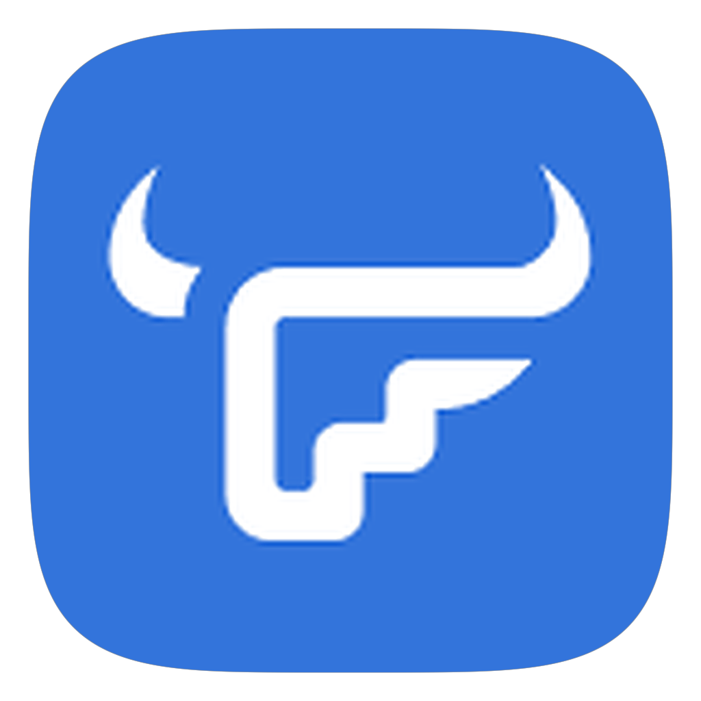

连接飞牛 NAS
输入设备地址或 FN ID，以下任意一种均可。
支持的地址类型
| 局域网 IP | 192.168.1.100 |
|---|---|
| IP + 自定义端口 | 192.168.1.100:8080 |
| 域名 | nas.example.com |
| 完整 URL | https://nas.example.com |
| FN ID | abc123 或 fn-abc123 |
| FN ID 链接 | fnos.net/abc123 |
端口规则：输入 IP 未写端口时，http 使用 5666、https 使用 5667； 输入域名未写端口时按域名默认端口直接访问，不补端口； 写了端口则一律使用所写的端口；FN ID 走 FN Connect 远程通道。